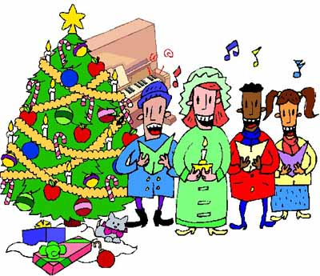
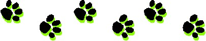

The Samoyed Club of Washington State

October-December 2004 Web Edition
In This Issue:
President's Message
Editor's Message
A Christmas Story
|
The Samoyed Club of Washington State
|
In This Issue: |
|
President's Message - October 2004 Happy Fall! If the beautiful changing colors were not enough to let you know which season were in, the change in our dogs is a pretty good clue! My boys just about vibrated their way to the van for the first cart run of the season. Its what theyve been waiting for all summer! Our Northwesteners had a pretty impressive showing at the National this year, complete with Linda and Lightning winning both the National Specialty BISS and, along with Nimbus, the top sled team award. Our region has a rich heritage for working Samoyeds (ask Jim and Celinda to share some of their research on Rex of Whiteway, for example) and its wonderful to have been there to witness this win! Congratulations! The national specialty in Kansas set all sorts of records for entries. As we work to plan for our national in 2006, it will be important to keep in mind that the nationals held on the coasts do not have as large a draw, and ours in the far northwest are typically considerably smaller. Nonetheless, we will have lots of folks to host for this event and we need all the help we can gather. There are a few key positions were still seeking chair-people for, including performance and working event trophies, agility, herding, silent auction, judges hospitality, art show and transportation. All of the committees would welcome some helpers. Even if you can only offer an hour or two of computer time, assembling goodie bags, putting labels on bottles, etc., please let the appropriate chairperson know of your interest, availability and any limitations you may have in terms of time. Im sure theres a spot for everyone to contribute to the success of this event!
Cheri Editor's Message - December, 2004 All year long I wish I could be more like my dogs, but no other time do I wish it more than I do this time of year. I want to be the one who stays at home and enjoys the tree all day. But wait, I am the one that each time I come in the door, comes in to unconditional love and trust. I am the one that can do no wrong. I am the one that is cherished as the most important person in the world. What more could anyone ask for. I have the absolute best thing in the world. What else could I possible ask for? Well, if I really think about it, I could ask for one thing. SNOW! I want the white stuff. I want to get up Christmas morning and look at the window to a pristine, white world. I want to take my dogs out and mess the stuff up and make snow angels and snowmen. I want to throw snowballs and see the dogs chase them just to wonder how they disappeared and how they are supposed to find them when everything in the world looks the same. That is what would make my Christmas perfect. For each of you, my friends, I wish you your perfect Christmas. Liz A Christmas Story Hi, my name is Dallas and I have a very special family of humans. Last Christmas Mom did something really special with me and she said that she thought you might like to hear about it. First though (since this is the first time they have actually LET me use the puter) I want to tell you something about me. Im 5 now and have always been much smarter than my humans. They think they have trained me, but I just like to make them happy so sometimes I do what they want. The thing that makes me happiest is when I can make them laugh. When they first brought me to live here, they laughed a lot at me but sometimes I have to work harder at it now. Over the past five years my Mom and Dad have done a lot of things with me. The first place they took me was to a place where there were a bunch of other puppies. I thought it was play time but they started to try to teach me stuff too. I tried some of the tricks that my Mom told me about, but they didnt work on my humans. They made me behave and if I did behave they gave me these tasty treats. Then at the end of trying to teach me things, me and the rest of the puppies got to play together. That is when I found out about this breed thing. I thought all puppies were white but they arent. Besides that, they come in all sizesdid you already know that?
 Anyway, after a few months, the decided to take me to what they called a dog show. This was the first of many and I learned to really like them. Im a champion, whatever that means and I still go to shows sometimes, but not as often. Mom say bedience isnt nearly as much fun as confirmation, cause I make fun of her. She says everyone laughs at us but I thought that was good. I guess Mom doesnt think its good. So, that is who I am and what I have done so far. Last year, my human Grandma lived with us for a little while. I love Grandma cause she will sit and pet me and play with me forever. She also sneaks me snacks when she can. One day Grandma left with Mom and she didnt come back. I was really sad. Mom and Dad tried to splain but I just couldnt figure out what they meant. Then last at Christmas last year, Mom took me for a ride and we stopped at this place and Mom let me go in with her. I was real surprised because it wasnt the Vet or Pet Smart. Before we went in Mom told me that I had to be specially gentle with the humans I was about to meet. The were all older and some of them rode around in moving chairs or had rolling carts. She said they could fall over easy so I couldnt push or jump. We went in and there were lots of people there and they all wanted to see me and pet me. Some of them had little treats (I think Mom sneaked them to them). One lady in this weird chair that rolled, called out Oh, look at the Christmas Dog. I immediately looked around to see the other dog, but it seems it was me she was talking about. Then all the other folks decided that, yes, I was truly a Christmas dog. I tried to visit with all of them (for their good of course) but then Mom said we could come back but there was someone special we had to see. We walked down one hall and went in a door, and I knew Grandma was there, I could smell her. I ran over and jumped up on the bed and snuggled in with my Grandma. She felt so good and as I licked her face, she opened her eyes. Then she threw her arms around me and hugged me and loved me just like she had before. After I snuggled for a while Mom asked if we wanted to go down to the lounge with the other folks. So Grandma got up and we all went to see the others. As we got down there everyone was by the Christmas tree and someone was playing a piano while everyone else sang. I stopped and the door and sang with them and they all turned and gave me a funny look, then most of them laughed. I love it when humans laugh, it makes me feel so good and special. They invited us over to sing with them and I chimed right in. It didnt matter that I didnt know the words because they all seemed to be singing different words anyway. The whole time Mom and I were there Grandma kept me right by her side and the others spent lots of time petting me to. Mom soon said that all the people were getting tired and it was time to leave. She promised everyone that I would come back to see them and as we left I looked back and they were all smiling. I have never been sure what Christmas is, but I do know that I get presents. That year I got the most special present of all, I got to see my Grandma and I made her and lots of people laugh and smile. What better present could there be? After we left Mom said that these were all very special people. They all had some disease called Alzheimers Disease. It doesnt matter to me. All I know is that I can make them laugh and smile and that makes me feel good. We have been back lots of times since last Christmas and it makes me sad that I dont always get to see some of my friends, but I always make new friends. I would go every day if I could and make it Christmas every day for them. Anyway, what I really want to say to all of you if I could, is

| |